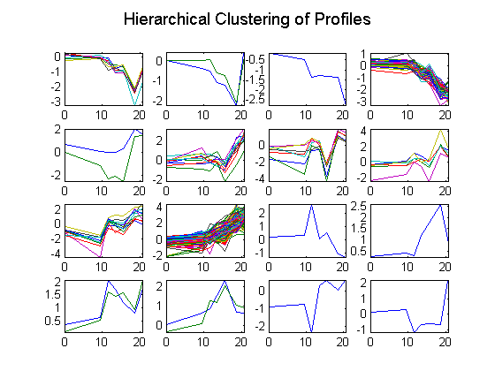
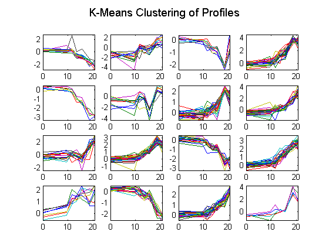
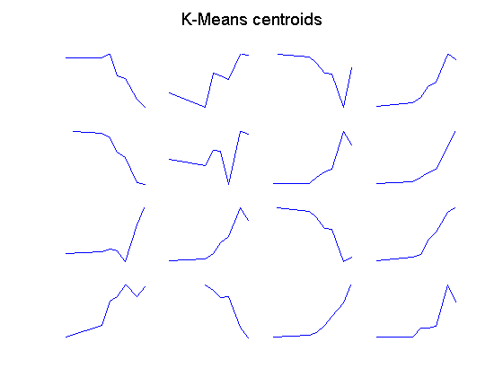
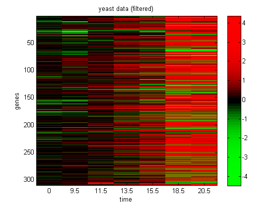
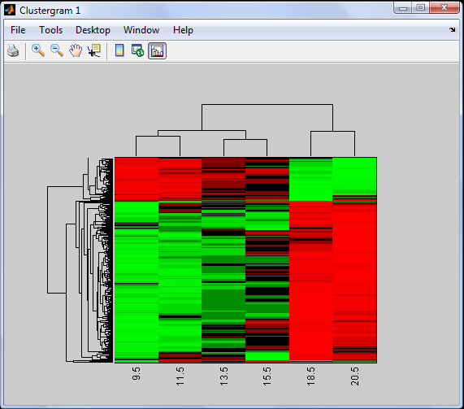
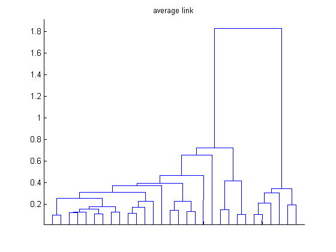
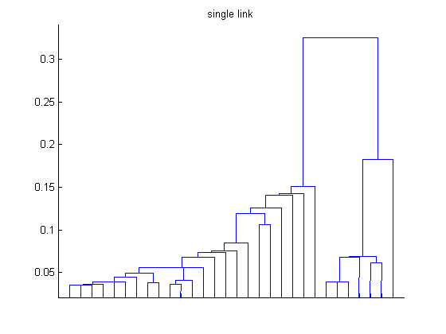

Yeast Clustergram Demo
requireStatsToolbox
requireBioinfoToolbox
load('yeastData310.mat')
corrDist = pdist(X, 'corr');
clusterTree = linkage(corrDist, 'average');
clusters = cluster(clusterTree, 'maxclust', 16);
figure();
for c = 1:16
subplot(4,4,c);
plot(times,X((clusters == c),:)');
axis tight
end
suptitle('Hierarchical Clustering of Profiles')
printPmtkFigure clusterYeastHier16;
[ctrs, cidx] = kmeansFit(X, 16);
ctrs = ctrs';
figure();
for c = 1:16
subplot(4,4,c);
plot(times,X((cidx == c),:)');
axis tight
end
suptitle('K-Means Clustering of Profiles');
printPmtkFigure clusterYeastKmeans16
figure();
for c = 1:16
subplot(4,4,c);
plot(times,ctrs(c,:)');
axis tight
axis off
end
suptitle('K-Means centroids')
printPmtkFigure clusterYeastKmeansCentroids16
figure();
imagesc(X);
colormap(redgreencmap)
xlabel('time')
set(gca,'xticklabel',times)
ylabel('genes')
title('yeast data (filtered)')
colorbar
printPmtkFigure clusterYeast310
clustergram(X(:,2:end),'RowLabels',genes, 'ColumnLabels',times(2:end))
title('hierarchical clustering')
printPmtkFigure clusterYeastRowPerm
figure();
dendrogram(linkage(corrDist, 'average'));
title('average link')
set(gca,'xticklabel','')
printPmtkFigure clusterYeastAvgLink
figure();
dendrogram(linkage(corrDist, 'complete'))
title('complete link')
set(gca,'xticklabel','')
printPmtkFigure clusterYeastCompleteLink
figure();
dendrogram(linkage(corrDist, 'single'))
title('single link')
set(gca,'xticklabel','')
printPmtkFigure clusterYeastSingleLink
Clustergram object with 310 rows of nodes and 6 columns of nodes.
      